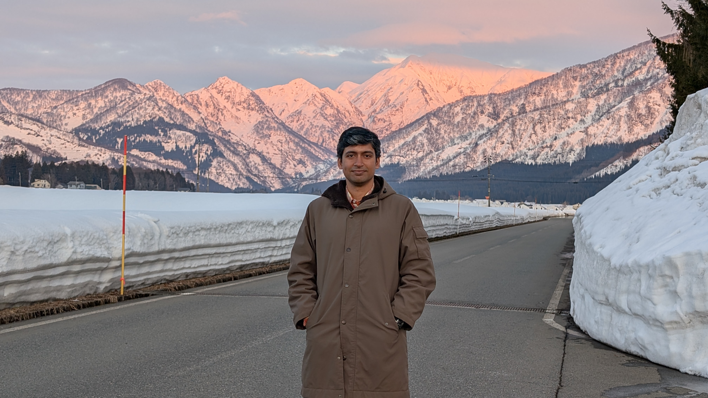
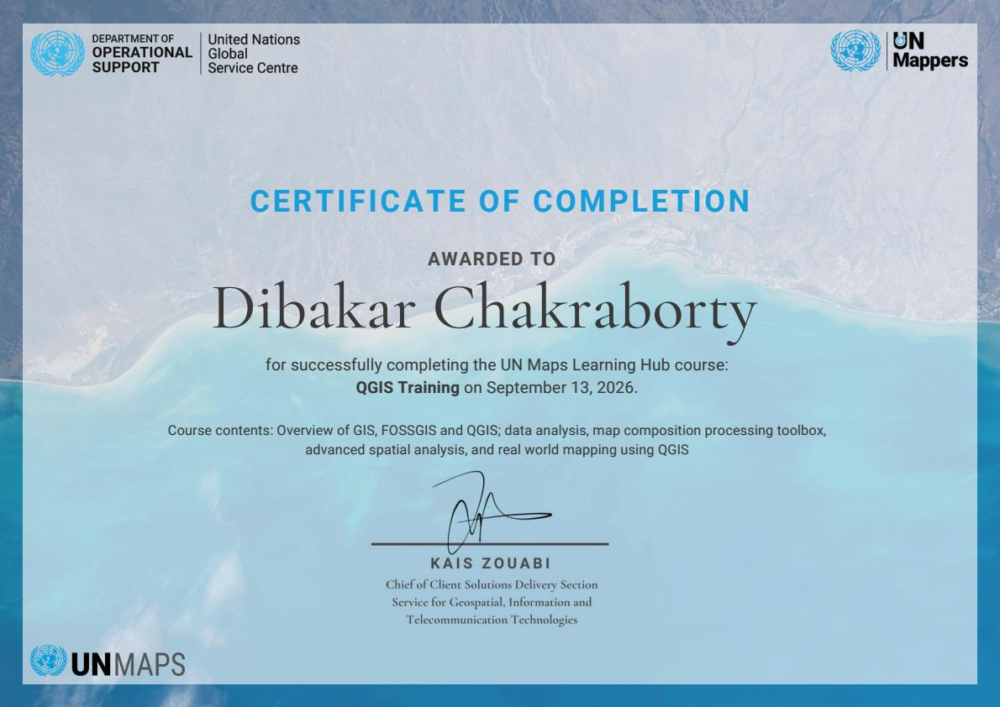
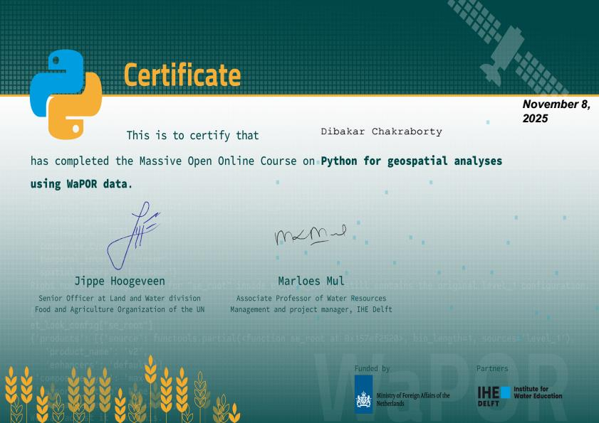
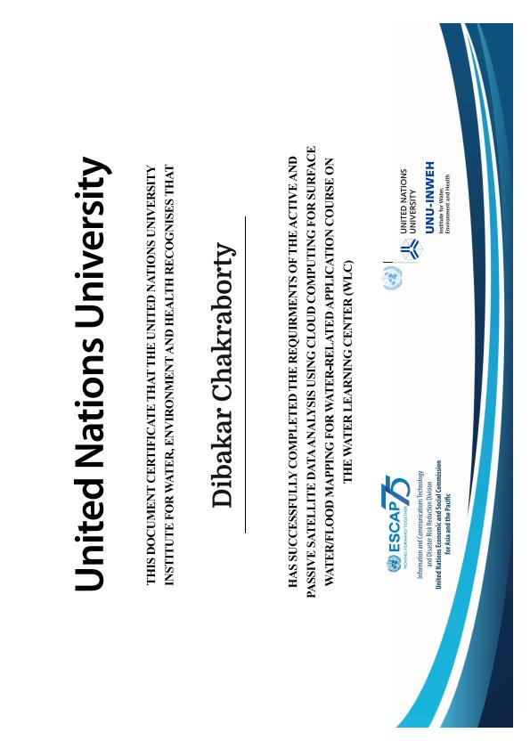
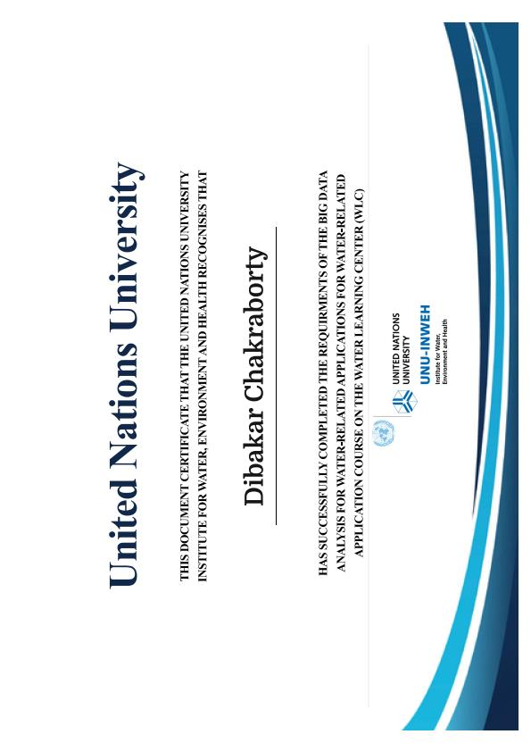

About
I am an Assistant Professor of Geography at the Directorate of Secondary and Higher Education under the Ministry of Education, Bangladesh. As a JDS Fellow, I completed my MSc in Environmental Science at the University of Tsukuba, Japan.
My work connects traditional geography with spatial data science. I use satellite imagery, GIS and deep learning to map land and water, and field-based methods to understand how floods affect people's livelihoods, food security and health.

Research Interests
- Flood hazard and depth. Estimating flood extent and water depth from satellite data and elevation models.
- Deep learning for land cover. Multi-temporal, multi-sensor classification at national scale.
- SAR and optical remote sensing. Combining radar and optical imagery, with cloud-based processing in Google Earth Engine.
- Community resilience. Linking hazard maps to livelihoods, food security and health in flood-prone areas of Bangladesh.
Research
Current work: flood depth estimation Ongoing
I am studying FLEXTH (Betterle and Salamon, 2024), a method that estimates flood water depth from a satellite-derived flood extent map and a digital elevation model. I am applying it to flood events in Bangladesh, with the aim of linking flood depth to community impacts such as livelihoods and health.
Master's research: a national-scale land cover map
My MSc research at the University of Tsukuba produced the first national-scale, high-resolution land use land cover (HRLULC) map of Bangladesh from multi-temporal optical and SAR imagery, with technical support from JAXA. A Convolutional Neural Network (CNN) classified the imagery. Because deep learning needs a large volume of reference data, the national map used approximately 67,000 reference points and a range of spectral indices, and it accounted for six seasonal variations. I carried out the analysis in Google Earth Engine and Python.


Foundation models and cloud computing
After this work I became interested in the Prithvi-EO 2.0 geospatial foundation model. I tested it on a Google Colab A100 GPU, but the high-resolution imagery it requires exceeded the hardware available to me. The attempt taught me to run large models on cloud computing platforms, and I would like to fine-tune such models with access to high-performance computing.
Publications
-
Journal article · 2025
The First National-Scale High-Resolution Land Use Land Cover Map of Bangladesh Using Multi-Temporal Optical and SAR ImageryEarth, 6(4), 143
-
Conference paper · 2023
Engaging Youth in Flood Risk Management: A Citizen Science Geospatial Initiative in BangladeshProceedings of the 3rd International Symposium on Disaster Resilience and Sustainable Development (DRSD 2023), Springer Nature Singapore
-
Book chapter · 2022
Health Impacts of Climate Change-Related Flash Flood: A Case from BangladeshIn T. M. Letcher (Ed.), Living with Climate Change, Elsevier
-
Book chapter · 2021
2017 Flash Floods in Bangladesh: Lesson LearntIn I. Pal, R. Shaw, S. Shrestha, R. Djalante (Eds.), Disaster Resilience and Sustainability, Elsevier
Full list on Google Scholar.
Honors and Presentations
Outstanding Poster Presentation Recognition, ECRS 2026
Recognized for an outstanding poster presentation at the 6th International Electronic Conference on Remote Sensing (ECRS 2026), held online on 19–21 October 2026 (MDPI).

Skills
Remote sensing and modeling
Tools
Online Training and Certificates

QGIS Training, UN Maps Learning Hub
Open-source GIS workflows, spatial data analysis, the QGIS processing toolbox and cartographic map composition.

Python for Geospatial Analyses using WaPOR Data
Programmatic geospatial data processing and water productivity assessment in Python with FAO WaPOR datasets.

Active and Passive Satellite Data Analysis using Cloud Computing
Cloud-based processing of optical and SAR imagery for surface water delineation and flood hazard mapping.

Big Data Analysis for Water-Related Applications
Large-scale Earth observation analytics and cloud computing workflows for hydrological monitoring and water resource management.
Professional Experience
| Position | Institution | Period |
|---|---|---|
| Assistant Professor (Geography) | Directorate of Secondary and Higher Education, Ministry of Education, Bangladesh | Nov 2025 – present |
| Lecturer (Geography) | Directorate of Secondary and Higher Education, Ministry of Education, Bangladesh | Jun 2016 – Nov 2025 |
Education and Fellowships
| Degree | Institution | Details |
|---|---|---|
| MSc in Environmental Science | University of Tsukuba, Japan | JDS Fellow, 2023–2025 |
| MBA in Finance and Banking | Jahangirnagar University, Bangladesh | 2012–2013 |
| MSc in Geography and Environment | Jahangirnagar University, Bangladesh | 2010–2011 |
| BSc (Honours) in Geography and Environment | Jahangirnagar University, Bangladesh | 2006–2010 |